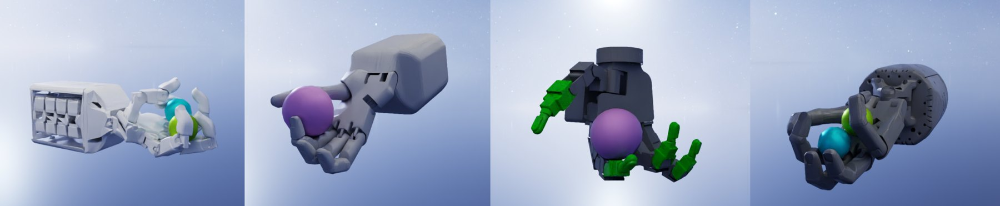
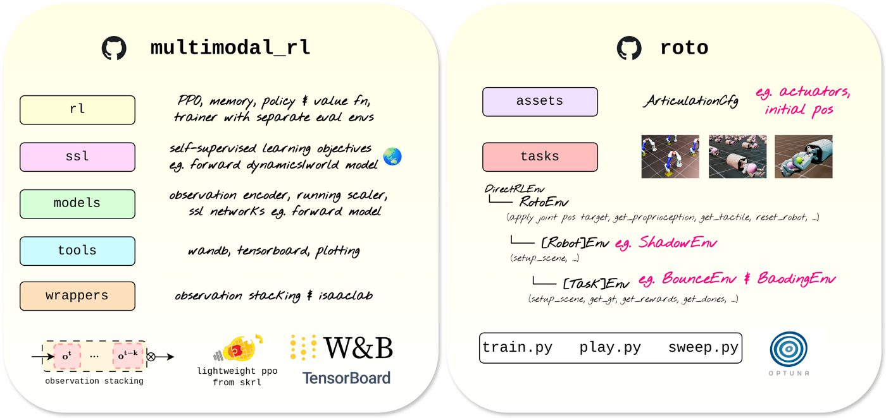

roto 2.0
The Robot Tactile Olympiad · ViTac Workshop, ICRA 2026
TL;DR A GPU-parallel benchmark for blind dexterous manipulation (proprioception and touch only, no object state) across four robot hands. Our blind agents reach 13 Baoding ball rotations in 10 seconds.

Why this exists
Tactile RL research is scattered. Everyone has their own hand, their own simulator setup and their own tuning, and most papers keep coming back to the same in-hand orientation tasks. That makes it really hard to tell whether a new idea actually helps. roto is our attempt to fix that: one set of environments, several hands, and baselines that have actually been tuned properly, so people can spend their time on the algorithm instead of on hyperparameter sweeps.
What's in it
- Blind by design. Agents see proprioception and touch. No object poses, no privileged state, no teacher–student distillation.
- Four morphologies, from 16 to 24 degrees of freedom, all joint-position controlled in Isaac Lab and simulated in parallel on the GPU.
- Tasks that cover different kinds of contact: sparse (Find), intermittent (Bounce) and sustained (Baoding).
- Tuned baselines, including RL-only and RL with self-supervised auxiliary objectives, with proper train/eval splits and integrated hyperparameter search.
My part
I brought the Shadow Dexterous Hand Lite into roto: the robot configuration, a sensor-aligned embodiment with its tendon coupling, and the Baoding task configs for it. That same setup is what I later took onto the real hand in No Eyes, No Problem.

multimodal_rl and the environments in roto, so you can plug your own RL library in.Abstract
Tactile-based reinforcement learning (RL) is currently hindered by fragmented research and a focus on over-saturated orientation tasks. We introduce v2 of the Robot Tactile Olympiad (roto 2.0), a GPU-parallelised benchmark designed to standardise tactile-based RL across four distinct robotic morphologies (16-DOF to 24-DOF). Unlike prior benchmarks, roto focuses on end-to-end "blind" manipulation, utilising only proprioception and tactile sensing without state information or distillation. We demonstrate a significant performance leap, with our blind agents achieving 13 Baoding ball rotations in 10 seconds, an order of magnitude faster than current state-of-the-art speeds. By open-sourcing our environments and robustly tuned baselines, we reduce the barrier to entry and enable researchers to prioritise fundamental algorithmic challenges over tedious RL tuning.
BibTeX
@misc{miller2026roto,
title = {roto 2.0: The Robot Tactile Olympiad},
author = {Miller, Elle and Reddy, Jayaram and Deshmukh, Ayush and McInroe, Trevor
and Abel, David and Mac Aodha, Oisin and Vijayakumar, Sethu},
year = {2026},
eprint = {2605.21429},
archivePrefix = {arXiv}
}